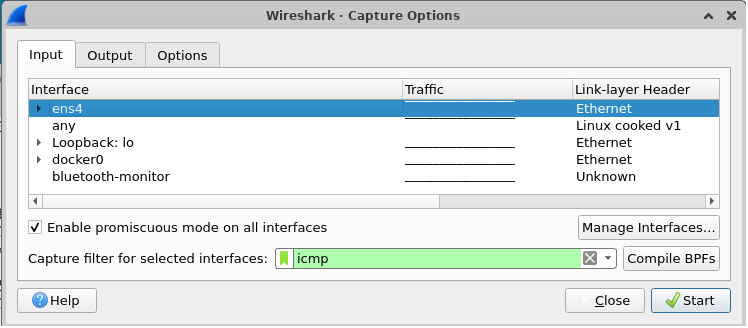
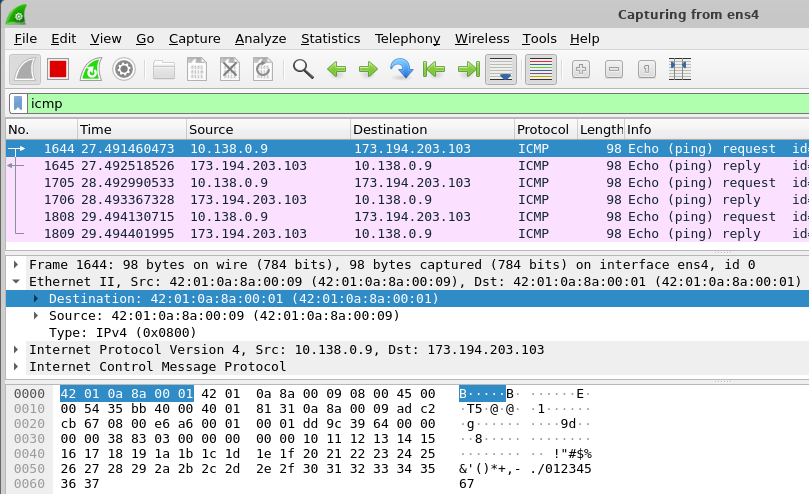

Login to linux.cs.pdx.edu. The dig tool allows one to query the DNS hierarchy via the Linux command line. It allows one to specify a server to query, the type of record to query, and any queryopt(ions) including whether to use TCP or UDP for the query.
Using ChatGPT, produce a dig command that queries PSU's local DNS server at 131.252.208.53 for the A record of www.pdx.edu using TCP.
Run the command to find the record. Then, use dig to do the same for the MX record of pdx.edu.
Using the IP addresses contained in these records, utilize IP address information services at https://www.iplocation.net/ to answer the following questions
Use dig to find the authoritative server (NS record type, AUTHORITY section response) for mashimaro.cs.pdx.edu and then query that server for the A record of mashimaro.cs.pdx.edu.
Using ChatGPT or the man page for dig, find the query option that allows one to specify whether a query can recurse or whether it should be iterative.
Using a set of iterative queries, we will now simulate the operation of a local DNS server in resolving the name console.cloud.google.com. Start by running dig with no arguments to list all root DNS servers that have been hard-coded into the tool. Locate the IPv4 address (e.g. the A record) of the F root server.
Starting with the F root server, perform the iterative queries a local DNS server would perform on a lookup. In performing this sequence of queries, ensure the queries are iterative and use TCP. (MCECS networks block UDP DNS traffic). Ensure that you are traveling down the hierarchy with the servers being specified via the @. Ensure you use the appropriate DNS record type for specifying that the authoritative server should be returned.
First, perform the following commands and examine the output to understand what egrep, awk, and the pipes (|) are doing:
ls -l /dev
ls -l /dev | egrep vcs
ls -l /dev | egrep vcs | awk '{print $10}'
You can save the standard output of a command and use it in subsequent command-line arguments. One way is to save it to an environment variable using back-ticks `command` or $(command)
X=`ls -l /dev | egrep loop | awk '{print $10}'`
echo $X
X=$(ls -l /dev | egrep loop | awk '{print $10}')
echo $X
Then, you can use a for loop in bash to iterate over each value that is returned
for i in `echo $X` do file /dev/$i done
Using ChatGPT, produce a single command line with commands dig, egrep, and awk, to list all IPv4 addresses that espn.go.com points to.
Run the command
Find the flag for dig that allows one to perform reverse lookups on IPv4 addresses. Given the flag and the shell tutorial above, take that list of addresses and create a single for loop in the shell that iterates over the list and performs a reverse lookup of each IP address to find each address's associated DNS name. As with the previous step, pipe the output of the for loop to egrep and awk so that the output consists only of the DNS names.
Ranges in the shell can be specified via { } notation. Perform the following two commands to see how it works.
echo {0..2}{0..9}
for i in {1..20}
do
echo $i
done
Using a for loop, perform a reverse DNS lookup for each IP address on the 131.252.220.0/24 subnet. Note that some addresses on the subnet do not have names bound to them and will not return a record. Take the output of the loop and pipe it to egrep and awk to list just the names of the hosts, then redirect the final output to a file called 220hosts.txt, using the > character to perform output redirection to a file.
Within the range of hosts is a set of car manufacturer names. Using the head and tail commands, craft a command in the format below that returns their names.
cat 220hosts.txt | head -<number_of_lines_1> | tail -<number_of_lines_2>
Content distribution networks (CDNs), covered later in this course, are a way of forward-deploying content to locations that are close to those who need access to it. Such networks can be implemented using DNS by replicating content across multiple servers and then having the authoritative DNS server for the site point resolutions to the replica nearest to the user.
To show how this is done, we will use dig to resolve www.google.com from different local name servers in order to see how resolution differs from different locations. After each step, answer the questions in your lab notebook.
Visit https://www.iplocation.net/ and look up the geographical location of the following DNS servers: 131.252.208.53 and 198.82.247.66.
Then, using dig, resolve www.google.com from each of the DNS servers. As Google forward deploys its web content close to its users, its name will resolve differently in different geographic locations.
dig @<DNS_server_IP> www.google.comGo back to https://www.iplocation.net/ and look up the geographical location of the two IP addresses you recorded.
You should see that the IP addresses that are resolved reside geographically close to the DNS servers used to resolve them.
Perform a traceroute to all 4 IP addresses (131.252.208.53, 198.82.247.66, and the two IP addresses www.google.com resolves to) from a machine on the PSU network (e.g. linux.cs.pdx.edu).
In this lab, you will familiarize yourself with wireshark to capture and analyze packets. Begin by using RDP to bring up a graphical desktop session on your Linux VM in the cloud. Within the session, launch a terminal.
Then, install wireshark
sudo apt update sudo apt install wireshark -y
Allow the root user to bring up a graphical program via:
xhost si:localuser:root
Then launch Wireshark as the administrator account.
sudo wireshark
In a terminal, using commands from prior labs, find the addresses and interfaces on the VM. Make a note of:
Within wireshark, find the Capture options and use a "Capture Filter" to specify icmp (the protocol used by the ping command)

In a separate terminal send 3 ping messages to Google's web site
ping -c 3 www.google.comClick on the first packet in the top window of the wireshark UI. Then, in the middle window, expand the data-link layer packet and click on the destination hardware addresses. See which bytes in the payload window this corresponds to.

Answer the following question for your lab notebook.
Click on the next packet in the trace.
We will now perform packet analyses to recap the protocols you have learned. To begin with,
OdinId>.oregonctf.org, replacing <OdinId> with your OdinIdBefore running our packet capture, we will use the shell to delete the ARP entry for the default router for the VM. Examine the output of the command below to see all of the entries in the table and their numeric IP addresses.
arp -anIn order to delete the ARP entry for the router, we simply run the command:
sudo arp -d <router_IP>Note that the entry is quickly regenerated the next time the machine has a packet to send. To see the deletion, we can run the arp -an command right after the delete command.
sudo arp -d <router_IP>; arp -anThe wireshark tool was derived from tcpdump, a command-line tool for collecting packet trace data. The trace files collected by both are compatible, allowing us to collect traces with tcpdump that we can then analyze within wireshark.
In a terminal, run the tcpdump command, specifying the name of the file to collect the packet trace in and keep the command running.
sudo tcpdump -w network_traceThen remove the default router's ARP entry and immediately retrieve http://<OdinId>.oregonctf.org (replacing <OdinId> with your Odin Id).
sudo arp -d <router_IP>; wget http://<OdinId>.oregonctf.orgBack in the window running tcpdump, type Ctrl+c to terminate the packet trace collection..
Launch wireshark. Under "File", open the packet trace file collected. Within the display filter interface, apply the following filter (substituting the appropriate values), in order to show all ARP, DNS, and HTTP traffic, along with any traffic to the IP address of the web site.
arp or dns or http or ip.addr==<oregonctf_IP>ARP
DNS
TCP
HTTP
Exit out of your RDP session, then stop the VM
gcloud compute instances stop <name_of_VM>